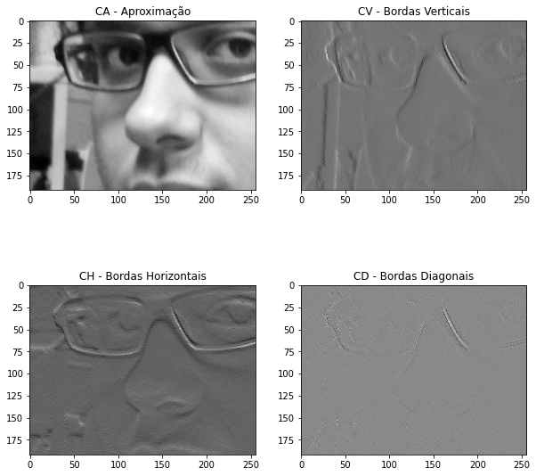
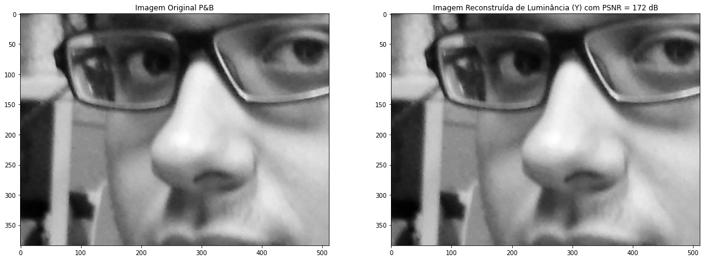
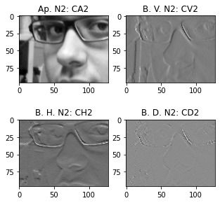
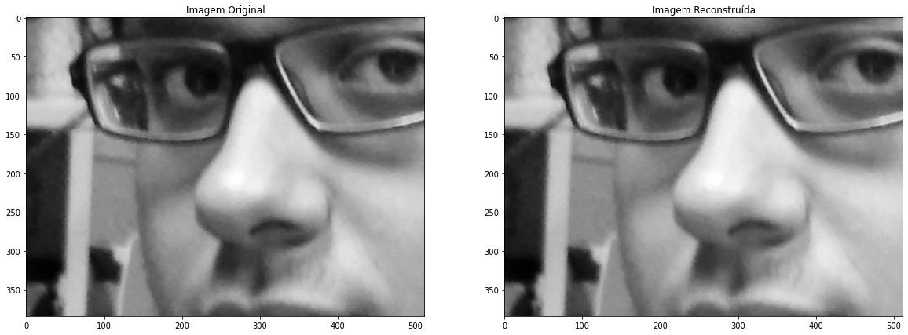
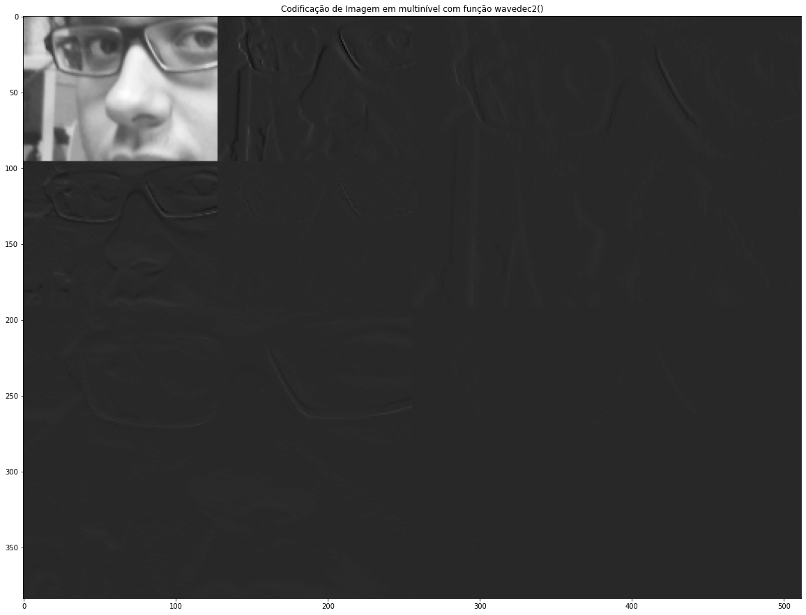
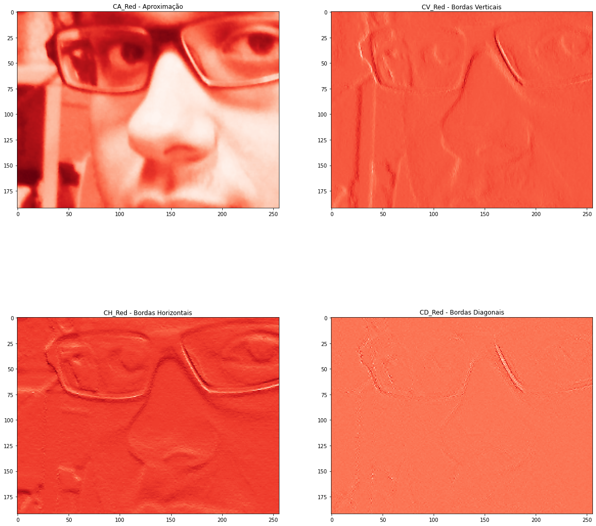
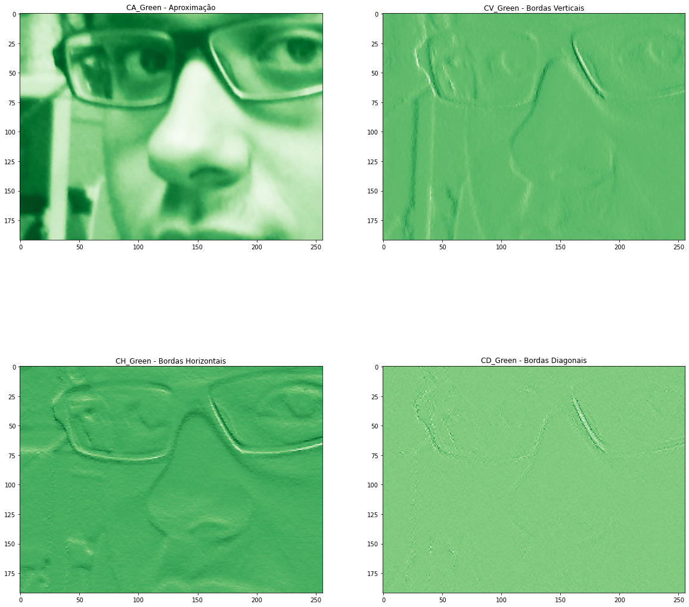
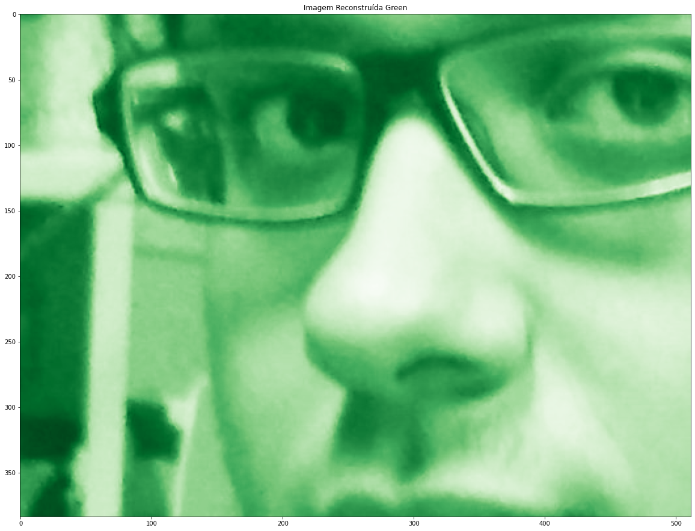
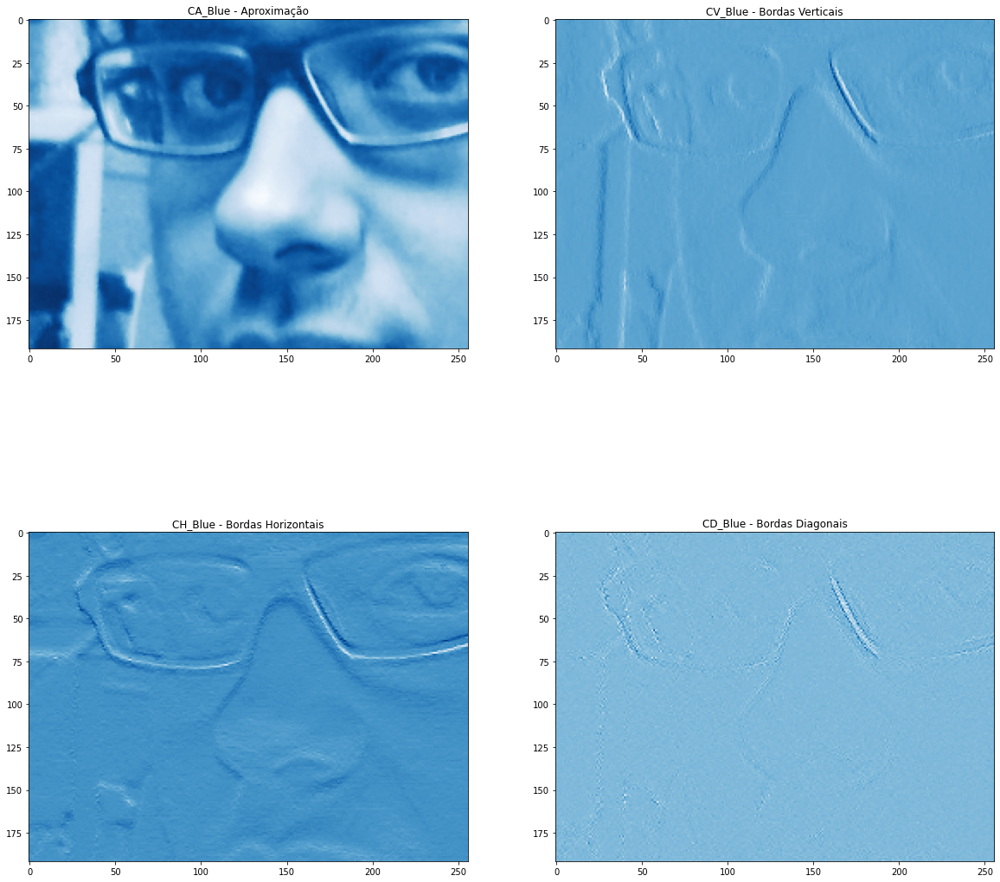
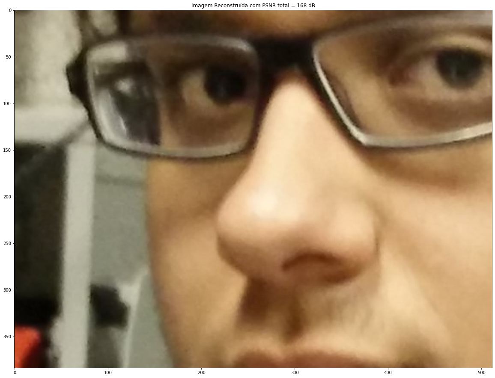

Laboratório 4
A imagem foi cortada pois o programa apresentava erro com a imagem completa
C. Codicação de Luminância (P&B) com DWT

C.1 Cálculo do Erro Quadrático Médio (MSE) e da Relação Sinal Ruído de Pico (PSNR)
MSE_Y = 3.72e-13
PSNR_Luma = 172.43 dB

D. Teste das Funções de Multiresolução wavedec2() e waverec2()


E. Efetuar uma "Montagem" com wavedec2() e wavedecn()

F. Reconstrução de Imagem Colorida






G. Salvando as Aproximações e depois fazendo download dos arquivos, calcular a taxa de compressão com o original
H. Gravando o Arquivo Codificado DWT/IDWT nível 1 Colorido, calcular a taxa de compressão com o original
I. Reconstrução da Imagem colorida e Cálculo da MSE de cada plano de cor e da PSNR total
MSE_Red= 4.90e-13 MSE_Green= 3.49e-13 MSE_Blue= 1.80e-13
PSNR total = 168.05 dB
